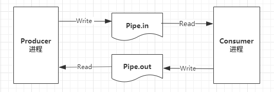
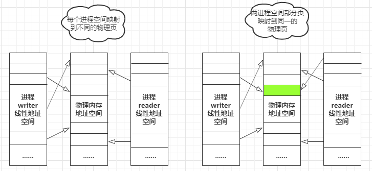
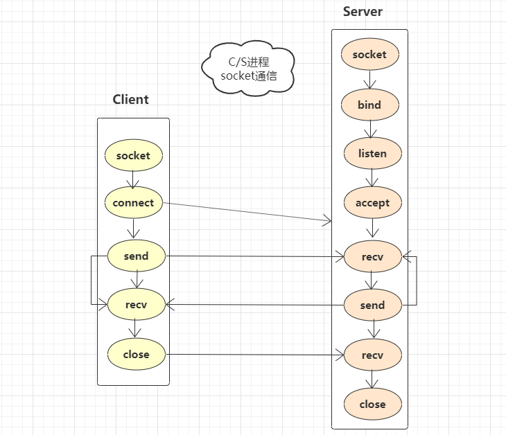

原文连接:https://www.cnblogs.com/yssjun/p/11438850.html
操作系统会为每一个创建的进程分配一个独立的地址空间，不同进程的地址空间是完全隔离的，因此如果不加其他的措施，他们完全感觉不到彼此的存在。那么进程之间怎么进行通信？他们之间的关联是怎样的？实现原理是什么？本文就来借助Python简单的聊一下进程之间的通信？还是那句话，原理是相同的，希望能透过具体的例子来体会一下本质的东西。
下面尽量以简单的方式介绍一下每一类通信方式，具体的细节可以参照文档使用；
1. 管道
先来看一下最简单、古老的一种IPC：管道。通常指的是无名管道，本质上可以看做一种文件，只存在于内存当中，不会存盘。不同进程通过系统提供的接口来向管道中读取或者写入数据。
也就是说我们通过这样一个中间介质为进程提供交流的方式。无名管道的局限在于一般只用于有直接关联关系的父子进程。下面通过一个简单的例子来看一下其用法。
from multiprocessing import Process, Pipe
def pstart(pname, conn):
conn.send("Data@subprocess")
print(conn.recv()) # Data@parentprocess
if __name__ == '__main__':
conn1, conn2 = Pipe(True)
sub_proc = Process(target=pstart, args=('subprocess', conn2,))
sub_proc.start()
print (conn1.recv()) # Data@subprocess
conn1.send("Data@parentprocess")
sub_proc.join()管道通信三步曲：
- 创建Pipe，得到两个connection对象conn1和conn2；
- 父进程持有conn1，将conn2传递给子进程；
- 父子进程通过对持有的connection对象进行send和recv操作以进行数据传递和接受；
上面我们创建的是全双工管道，也可以创建半双工管道，具体使用可以参照官网描述：
Returns a pair
(conn1, conn2)ofConnectionobjects representing the ends of a pipe.If duplex is
True(the default) then the pipe is bidirectional. If duplex isFalsethen the pipe is unidirectional:conn1can only be used for receiving messages andconn2can only be used for sending messages.
2. 具名管道（FIFO）
上面介绍的管道主要用于有直接关系的进程，局限性比较大。下面来看一下可以在任意进程间进行通信的具名管道。
由于window平台上os模块没有mkfifo属性，因此这个例子只能在linux上运行（测试环境 CentOS 7， Python 2.7.5）：
#!/usr/bin/python
import os, time
from multiprocessing import Process
input_pipe = "./pipe.in"
output_pipe = "./pipe.out"
def consumer():
if os.path.exists(input_pipe):
os.remove(input_pipe)
if os.path.exists(output_pipe):
os.remove(output_pipe)
os.mkfifo(output_pipe)
os.mkfifo(input_pipe)
in1 = os.open(input_pipe, os.O_RDONLY) # read from pipe.in
out1 = os.open(output_pipe, os.O_SYNC | os.O_CREAT | os.O_RDWR)
while True:
read_data = os.read(in1, 1024)
print("received data from pipe.in: %s @consumer" % read_data)
if len(read_data) == 0:
time.sleep(1)
continue
if "exit" in read_data:
break
os.write(out1, read_data)
os.close(in1)
os.close(out1)
def producer():
in2 = None
out2 = os.open(input_pipe, os.O_SYNC | os.O_CREAT | os.O_RDWR)
for i in range(1, 4):
msg = "msg " + str(i)
len_send = os.write(out2, msg)
print("------product msg: %s by producer------" % msg)
if in2 is None:
in2 = os.open(output_pipe, os.O_RDONLY) # read from pipe.out
data = os.read(in2, 1024)
if len(data) == 0:
break
print("received data from pipe.out: %s @producer" % data)
time.sleep(1)
os.write(out2, 'exit')
os.close(in2)
os.close(out2)
if __name__ == '__main__':
pconsumer = Process(target=consumer, args=())
pproducer = Process(target=producer, args=())
pconsumer.start()
time.sleep(0.5)
pproducer.start()
pconsumer.join()
pproducer.join()
运行流程如下：

每一轮的过程如下：
- producer进程往pipe.in文件中写入消息数据；
- consumer进程从pipe.in文件中读入消息数据；
- consumer进程往pipe.out文件中写入回执消息数据；
- producer进程从pipe.out文件中读出回执消息数据；
结果如下：


[shijun@localhost python]$ python main.py
------product msg: msg 1 by producer------
received data from pipe.in: msg 1 @consumer
received data from pipe.out: msg 1 @producer
------product msg: msg 2 by producer------
received data from pipe.in: msg 2 @consumer
received data from pipe.out: msg 2 @producer
------product msg: msg 3 by producer------
received data from pipe.in: msg 3 @consumer
received data from pipe.out: msg 3 @producer
received data from pipe.in: exit @consumer两个进程没有直接的关系，每个进程有一个读文件和写文件，如果两个进程的读写文件是关联的，就可以进行通信。
3. 消息队列（Queue）
进程之间通过向队列中添加数据或者从队列中获取数据来进行消息数据的传递。下面是一个简单的例子。
from multiprocessing import Process, Queue
import time
def producer(que):
for product in ('Orange', 'Apple', ''):
print('put product: %s to queue' % product)
que.put(product)
time.sleep(0.5)
res = que.get()
print('consumer result: %s' % res)
def consumer(que):
while True:
product = que.get()
print('get product:%s from queue' % product)
que.put('suc!')
time.sleep(0.5)
if not product:
break
if __name__ == '__main__':
que = Queue(1)
p = Process(target=producer, args=(que,))
c = Process(target=consumer, args=(que,))
p.start()
c.start()
p.join()
c.join()这个例子比较简单，queue的具体用法可以参考一下官网。
结果：
put product: Orange to queue
consumer result: suc!
put product: Apple to queue
consumer result: suc!
put product: to queue
consumer result: suc!
get product:Orange from queue
get product:Apple from queue
get product: from queue这里有几点需要注意下：
- 可以指定队列的容量，如果超出容量会有异常：raise Full；
- 默认put和get均会阻塞当前进程；
- 如果put没有设置成阻塞，那么可能自己从队列中取出自己放入的数据；
4. 共享内存
共享内存是一种常用的，高效的进程之间的通信方式，为了保证共享内存的有序访问，需要对进程采取额外的同步措施。
下面的这个例子仅仅简单的演示了Python中如何在不同进程间使用共享内存进行通信的。
from multiprocessing import Process
import mmap
import contextlib
import time
def writer():
with contextlib.closing(mmap.mmap(-1, 1024, tagname='cnblogs', access=mmap.ACCESS_WRITE)) as mem:
for share_data in ("Hello", "Alpha_Panda"):
mem.seek(0)
print('Write data:== %s == to share memory!' % share_data)
mem.write(str.encode(share_data))
mem.flush()
time.sleep(0.5)
def reader():
while True:
invalid_byte, empty_byte = str.encode('\x00'), str.encode('')
with contextlib.closing(mmap.mmap(-1, 1024, tagname='cnblogs', access=mmap.ACCESS_READ)) as mem:
share_data = mem.read(1024).replace(invalid_byte, empty_byte)
if not share_data:
""" 当共享内存没有有效数据时结束reader """
break
print("Get data:== %s == from share memory!" % share_data.decode())
time.sleep(0.5)
if __name__ == '__main__':
p_reader = Process(target=reader, args=())
p_writer = Process(target=writer, args=())
p_writer.start()
p_reader.start()
p_writer.join()
p_reader.join()执行结果：
Write data:== Hello == to share memory!
Write data:== Alpha_Panda == to share memory!
Get data:== Hello == from share memory!
Get data:== Alpha_Panda == from share memory!下面简单的来说明一下共享内存的原理；
进程虚拟地址到物理地址的一个映射关如下：

上面这个图已经很明白的展示了共享内存的原理。
左边是正常情况下，不同进程的线性地址空间被映射到不同的物理内存页，这样不管其他进程怎么修改物理内存，都不会影响到其他进程；
右边表示的是进程共享内存的情况下，不同进程的部分线性地址会被映射到同一物理页，一个进程对这个物理页的修改，会对另一个进程立即可见；
当然潜在的问题就是要采取进程同步措施，也就是对共享内存的访问必须是互斥的。这个可以借助信号量来实现。
5. socket通信
最后再来介绍一种可以跨主机的进程间通信：socket。
懂网络编程的人，对这个应该都比较熟悉。socket不仅可以跨主机进行通信，甚至有时候可以使用socket在同一主机的不同进程间进行通信。
这部分代码比较简单常见，这里仅仅使用流程图来表示一下socket通信的流程及相关接口。

上图表示客户端上某进程使用socket和服务器上监听程序进行socket通信的一个流程。
小结
到这里关于常见的进程间通信相关的概念和实例均简单介绍了一下。希望本文能让你对进程间通信有一个更深入的理解和认识。
结合之前几篇介绍线程、进程概念及线程间同步的一些措施的介绍，相信应该对线程和进程相关概念有一个简单清晰的认识了。